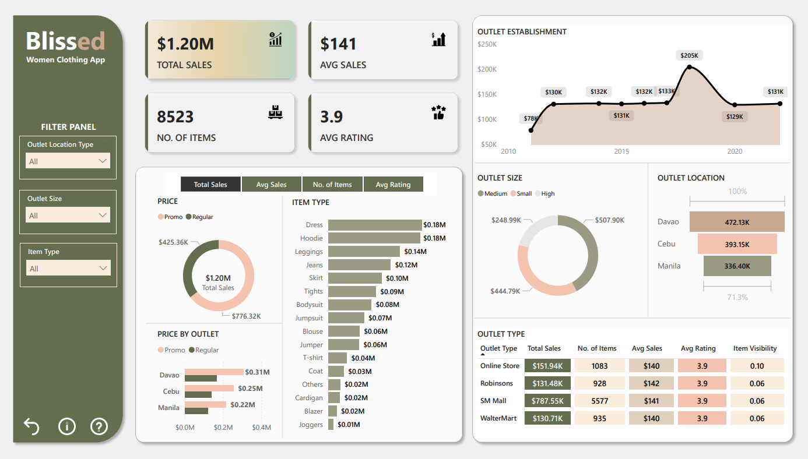
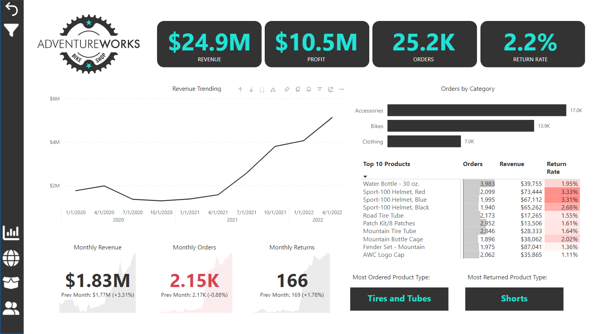

Power BI, Microsoft’s premier business intelligence and visualization tool, stands at the forefront of this
revolution. This cloud-based suite of apps, software, and connectors not only aggregates and contextualizes
raw business data but also converts it into interactive visual dashboards (DataCamo, 2024).

Figure 1: Comprehensive retail sales dashboard for a women’s clothing app highlighting total
sales, average ratings, outlet performance, and item type breakdown across various locations.

Figure 2: Sales and operations performance overview for AdventureWorks, showing revenue growth
trends, top-selling products, return rates, and product category distribution over time.